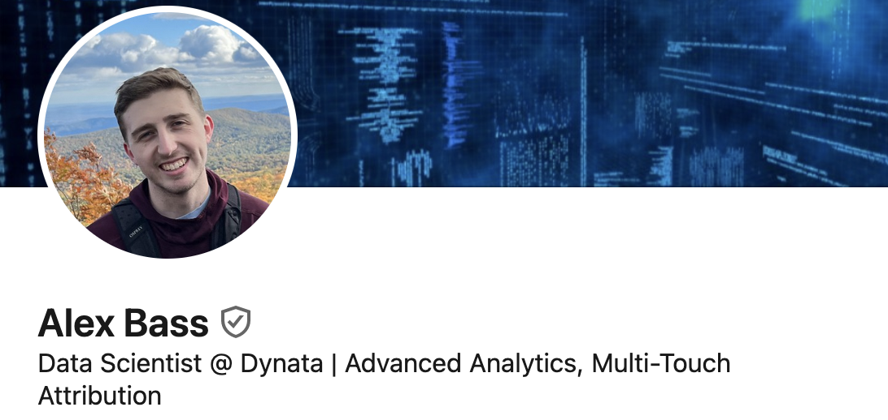

My Path: Social Science to Data Science

In April 2020, I graduated with my bachelor’s degree in Political Science. I now work as a data scientist at Dynata. Here are a few notes in hopes of helping my social science friends who want to break into data science.
Beginnings
At my university, all political science students were required to take an intensive stats course. We learned the fundamentals of statistics applied to social science problems like income inequality, racism, and elections. I was fascinated learning about statistical techniques that could make predictions or show whether a variable had a statistically significant effect. I realized so many interesting questions could be aided with the help of data and statistics. This course was actually the most I had enjoyed a class up to this point. After this course, I wanted to pursue opportunities using the skills I had learned, so I researched and found an internship with TargetPoint Consulting. Fortunately, my university had a database of internships that previous students had done with filters for your interests. I reached out via email, I soon had an interview lined up, and the internship was mine!
While I didn’t do any data science work, (I mostly made slides and and QA-ed surveys before launch) this provided invaluable experience and led to landing my first job. They allowed me to do a small passion project where I analyzed the political affiliations of different sports fans (baseball vs. football vs. basketball) and made a visual about it. Here comes the first tip…
Internships are an invaluable way to get your foot in the door to a field and help you land entry-level jobs
After my internship finished, I had about a year left in my undergrad, so I tried to take more political science statistics classes. I took data visualization with R, advanced statistical analysis, and qualitative methods.
My First Job
As my undergrad was finishing up, I sent out applications to so many places! I heard back from mostly market research firms because my internship was in market research. Echelon Insights reached out to me for an interview as a Research Analyst. In the interview, one of their main question was asking about my small passion project about sports fans political affiliation. Needless to say, I was hired. My boss at Echelon Insights was familiar with the work and people from TargetPoint (my intership), which no doubt helped me secure a spot at my first job post undergrad.
I spent about 2 years at Echelon Insights and thoroughly enjoyed my time there. I felt a lot of the work we were doing was very interesting (a lot of political work) and my bosses and coworkers were very kind and intelligent. At first, a lot of my work was dealing with deliverable creation (slide decks and topline creation). I expressed interest in more data-oriented tasks which included loading a survey into R and joining some data, weighting a survey, finding and joining county-level data. They eventually put me on projects where I was able to work on modeling. For example, I helped with a project where we modelled phone response rates. Also, I worked on a model predicting voter turnout in a specified region.
In my opinion, it is easier to transition tasks and roles in a company to be a data scientist than it is to get random data science jobs on LinkedIn. As you take on more data science tasks, you can put it on a resume to land another data science job elsewhere.
Bonus: In most office jobs, there are things that can be automated or ways to use coding. Taking initiative and trying to automate can be experience you put on a resume and can help you transition roles
If I were to give advice to an aspiring data scientist in social sciences, I would say that market research is a great place to get started. There are more project manager/researcher type jobs that are easier for SS folks to break into and from there, they can transition to data science. Most market research firms I am aware of have a data science arm.
The Rest
While I really enjoyed my time at Echelon Insights, I was spending more time doing project management tasks than data science tasks and I wanted to change that. So, I decided to leave for a job with a larger company where I could solely focus on data science tasks.
It is easier to transition roles at a smaller company (gradually take on more tasks) than a larger one where roles are more segmented and defined. My time at Echelon Insights was perfect for this (around 10 employees at the time)
I joined the data science team at Morning Consult, another market research firm, as a Senior Data Analyst and gained a lot of valuable experience. They had a large number of data scientists with much more mature codebases. I used R for the majority of my days at Morning Consult and got to contribute to some cool coding projects including building a python web bot that automated test survey creation. There still was some hold-ups as the data science team was quite bloated and most of my time was spent creating neat data tables for clients instead of modeling and doing the data science tasks I was interested in. A lot of the data science specific tasks were already taken by other people (60ish data analysts and scientists). Also, at the time, the data science team programmed surveys in qualtrics which ate up far too much of my time than I desired.
From this point, I applied for other positions where I got to practice more statistics and eventually accepted a data scientist position at my current company, Dynata. I have been really pleased with my position and have gotten to work on fun data science projects such as building an attribute drivers, difference-in-difference, and multi-touch attribution codebase and products associated with them. I also perform advanced analytical studies using these codebases.
Aside On Leveling Up Your Skillset
Throughout this process, I needed to level up some of my technical skills. For example, in the political science department, they didn’t teach me anything about python(though i did learn some R) and fundamentals of coding/programming. Also, while I learned a decent amount about economentrics, there is a lot more out there that I needed to discover about machine learning methods and techniques.
To level up my coding ability, I bought a python course on Udemy. I worked through this course throughout my first job at Echelon Insights. I also bought a year subscription to Datacamp. While datacamp is helpful learning different packages in python and R, I learned more from the python course on Udemy.
To level up my technical data science knowledge, I applied and graduated with my Master’s in Data Science from the University of Virginia. The program was part-time online over the course of two years. I also started this program midway through my first job and then graduated this past May.
There are many free or cheap resources online that can you can utilize to learn coding and data science. Use these online courses as an edge to be better at coding. Ideally, I try to have a course or something I can work through about a different data science skill at any given time. I may not finish all these courses and I definitely take healthy breaks from them.
I also would recomment having a place to put the stuff you learn as you work through courses. Make a portfolio or a blog site (like this one) to show off!
Conclusion
Every career path is different and I’m sure there are dozens more ways social science graduates can break into data science, but here is my path. I sincerely hope that its valuable to you!
I am very happy to chat if you would like to talk more about any aspect of this or want more details. Also, I’ll respond if you comment below.
I wrote a companion piece here called ‘Do I need a Master’s for Data Science?’ if you enjoyed reading this one 🙂